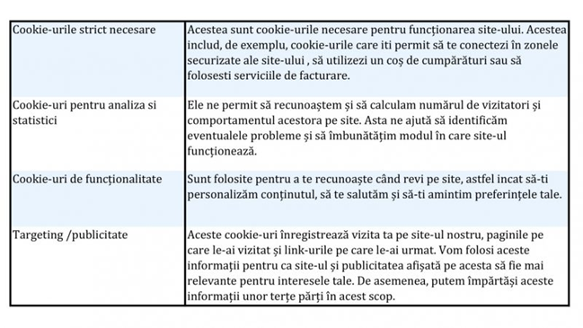

Data actualizarii 03-04-2024
Data intrarii in vigoare 03-04-2024
Aceasta Politica de confidentialitate descrie politica societatii Iconic Academy, Cluj-napoca, Cluj, email: triflarisa85@gmail.com, telefon:0745 604818 , cu privire la colectarea, utilizarea si partajarea datelor personale, date colectate daca utilizati site-ul nostru (www.ICONICAcademy.ro), numit “Serviciul”. Prin accesarea si utilizarea Serviciului nostru, iti exprimi acordul cu privire la colectarea, utilizarea si partajarea informatiilor si datelor personale puse la dispozitie in conformitate cu aceasta Politica de confidentialitate. Daca nu sunteti de acord cu aceasta, va rugam sa nu accesati sau sa utilizati Serviciul nostru.
Putem modifica aceasta Politica de confidentialitate in orice moment, fara notificare prealabila, si vom posta varianta revizuita si data intrarii in vigoare. Politica revizuita va intra in vigoare in termen de 180 de zile de la data publicarii si pentru utilizatorii care au acceptat vechea Politica. Accesul la Serviciu si utilizarea acestuia dupa acest termen implica acceptarea automata la Politicii revizuite. In consecinta, recomandam consultarea periodica a paginii de Politica de confidentialitate.
Colectam si procesam urmatoarele informatii puse la dispozitile de care utilizator in legatura cu accesarea si utilizarea Serviciului:
Nu
Folosim informatiile colectate in urmatoarele scopuri:
Suport, Consimtamant Termeni & Conditii
Daca vom intentiona sa folosim informatiile colectate pentru oricare alt scop, iti vom cere inainte de utilizare consimtamantul, si numai dupa primirea consimtamantului, si numai pentru scopurile pentru care a fost cerut, vor fi folosite in consecinta. Exceptia poate fi numai in legatura cu cerinte sau obligatii impuse de lege.
Nu vom partaja informatiile personale colectate catre terte parti, fara consimtamantul tau, cu exceptia unor situatii limitate, cum ar fi cele de mai jos. Nu
Conditionam transferul catre aceste terte parti de utilizarea informatiilor numai in scopul pentru care au fost colectate si transferate, si ne-stocarea acestora mai mult decat termenul agreat la colectare pentru indeplinirea scopului.
Vom pastra informatiile colectate pentru Maxim 24 luni sau atat timp cateste necesar sa fie indeplinit scopul pentru care au fost colectate, asa cum a fost detaliat in prezenta Politica de confidentialitate. Vom fi obligati sa pastram anumite informatii pe termen mai lung, cum ar fi inregistrarile contabile impuse de legislatia in vigoare, sau pentru alte scopuri legitime, cum ar fi: aplicarea legii, prevenirea fraudelor.
Datele anonime si informatiile agregate, care nu te pot identifica (direct sau indirect), ar putea fi stocate pe termen nedeterminat.
In functie de legislatia aplicabila, ai dreptul de acces si rectificare sau stergere a datelor tale personale colectate de catre noi, ai dreptul sa primesti o copie a datelor colectate, ai dreptul de a te opune sau restictiona procesarea anumitor date personale, ai dreptul de a te adresa autoritatii competente cu petitii sau reclamatii cu privire la drepturile tale. Pentru a-ti exercita aceste drepturi, ne poti contacta astfel: Trif Larisa, triflarisa85@gmail.com
Iti vom raspunde la cerere in conformitate cu legislatia aplicabila, in termen de 30 zile.
Ai posibilitatea sa te opui prelucrarii pentru comunicari de marketing sau analizei pentru publicitate personalizata, prin modificarea setarilor sau direct prin email la adresa triflarisa85@gmail.com.
Te rugam sa iei in considerare ca anumite informatii colectate sunt necesare pentru functionarea Serviciului, iar retragerea consimtamantului poate face ca acesta sa devina indisponibil pentru utilizare.
Site-ul nostru utilizează cookie-uri pentru a te distinge de ceilalți utilizatori. Acest lucru ne ajută să-ti usuram navigarea și ne permite, de asemenea, să îmbunătățim site-ul. Un cookie este un mic fișier pe care îl stocăm pe browserul sau pe hard diskul tau, dacă esti de acord. Utilizăm următoarele cookie-uri:
Reține că terțe părți (inclusiv, de exemplu, rețelele de publicitate și furnizorii de servicii externe, cum ar fi serviciile de analiză a traficului web) pot utiliza, de asemenea, cookie-uri, asupra cărora nu avem control. Este posibil ca aceste module cookie să fie cookie-uri de analiză / performanță sau cookie-uri de direcționare. Blocheaza cookie-urile activând setarea din browser-ul tau care iti permite să refuzi setarea tuturor cookie-urilor sau numai a unorara. Cu toate acestea, dacă utilizezi setările browserului pentru a bloca toate modulele cookie (inclusiv cookie-urile esențiale), este posibil să nu poti accesa toate site-urile noastre sau părți ale acestora.
Securitatea datelor si informatiilor colectate este importanta pentru noi, si vom implementa masuri de securitate adecvate pentru a preveni pierderea, alterarea si accesul neautorizat la datele colectate. Totusi, date fiind riscurile inerente, nu putem garanta securitate absoluta si in consecinta nu putem garanta securitatea informatiilor colectate
Serviciul nostru poate afisa link-uri catre alte site-uri care nu sunt operate de noi. Aceasta Politica de confidentialitate nu are legatura cu politicile si practicile altor site-uri, inclusiv dar fara a se limita la site-uri accesate prin intermediul unor link-uri publicate de acest Serviciu.
Iti recomandam sa consulti Politicile de confidentialitate ale oricaror alte site-uri pe care le vizitezi, pornind de la acest Serviciu. Nu avem control si nu ne asumam responsabilitatea pentru continutul, politicile de confidentialitate si practicile altor site-uri.
Daca ai intrebari sau nelamuriri cu privire la procesarea informatiilor / datelor personale colectate de catre noi, te rugam sa ne contactezi, „In atentia Responsabilului cu datele personale”, la adresa: Trif Larisa, triflarisa85@gmail.com.
Vom raspunde solicitarii in concordanta cu prevederile legale aplicabile in vigoare.